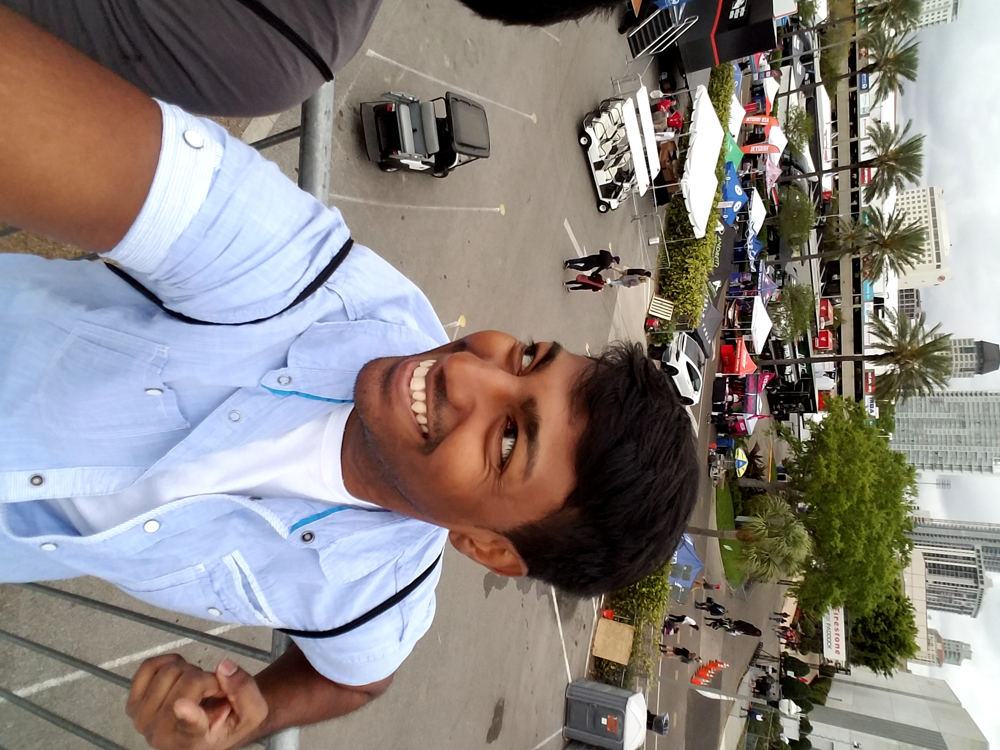

Hi! My name is Trevor Masiahdas and welcome to my website about me. In this box I will describe some key characteristics about me that I feel would be important, if not fun, to know when it comes to me
I pride myself as being "De Numba 1 Guyanese". I call myself this because I am good at almost everything that I try for the first time. I would say it is maily because of my ability to observe and adapt to things quickly while maintaing composure and grace. I stick to what I say for the most part but even after hearing myselftalk I usualy laugh. Conveniently the weird things I say also make others laugh too, which like most people makes me happy. I can also:
This small section tells about what I do when I am not working. Throughout my day I usally sleep, eat, do homework, watch anime, and if I stil have time I
will either work out or go out to chill with friends and family.
Here is a list of my top 5 favorite animes in order starting with the best:
I also enjoy long walks on the beach on a bright cool windy day when the sun is not burning me alive. I like driving manual cars and cruising down a empy
street, on a similar beach day, with my arm out the window with the music playing a nice song with some good instrumentals, bass, and lyrics. When I am
out with friends, we play pool, poker, drink, cook, play games, wrestle, go bowling, or throw small parties amongst ourselves. Some of the past parties
have been soup, coffee, cake, kikkoman, and gold sifting parties.

Right now I am currently attending Hillsborough Community College (HCC) to attain my Aoosiciates in
Science for Computer Information Systems. My wish/dream is to become a high-level programmer that can once day make a difference in people lives. Becoming an entrepreneur
is the first way that I see myself being able to achieve this goal. The other way that I imagine I can make my wish come true is by securing a professional
high-level job in the IT development industry. I am short on time because, aside from my efforts being for my success and future, I am also doing this to secure
a home by the age of 30 for me and my mom to move into. Once I complete the task of achieving a home, I can then, with confidence
start my own family and make my mom and myself happy. This sums up my webpage about me. I have included a short
tune that I find to be soothing at the end of the day or during a beautiful day. I hope you enjoy it! :)